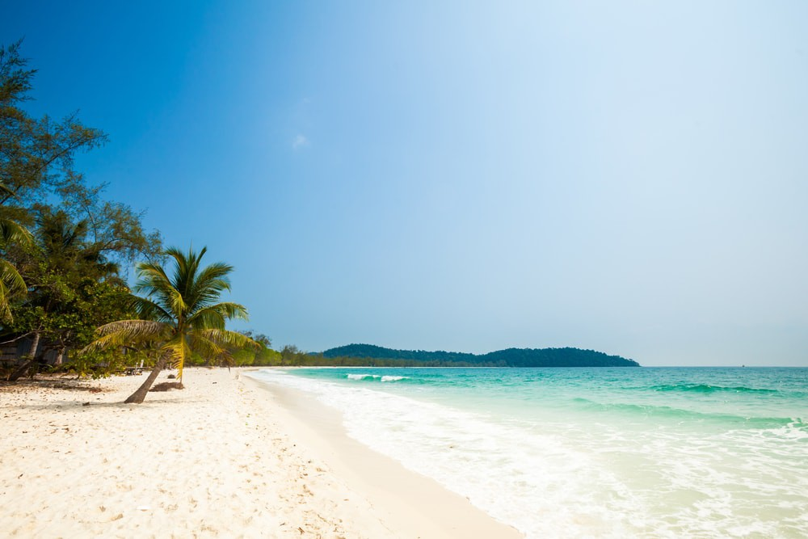

Growing up, I always like going to the beach and swimming in the sea. Most of the time, my family and I generally ends up going to either a lake/waterfall or somewhere along the coastline for our vacation. Thus, I always enjoy being at the beach and swimming there, despite going to the same place almost every time. One of the most memorable places for me is Koh Rong Island, located about 15 miles off the coast of Sihanoukville, a coastal city of Cambodia.

Most of the beaches in the city are usually pretty busy and overcrowded, but the ones on the island are more secluded and more relaxing. At least that was what it used to be and how I remembered it the last time I was there, similiar to the picture above. The island has recently became a popular tourist attraction, and more people are flocking into the island. As a result, Koh Rong has becoming much more crowded and slowly turning into a typical touristy beach, which looks something like this.
Below is the map of Koh Rong Island. Please feel free to look around the island.